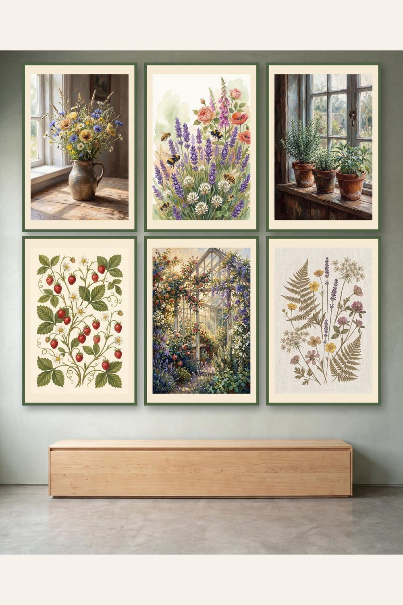
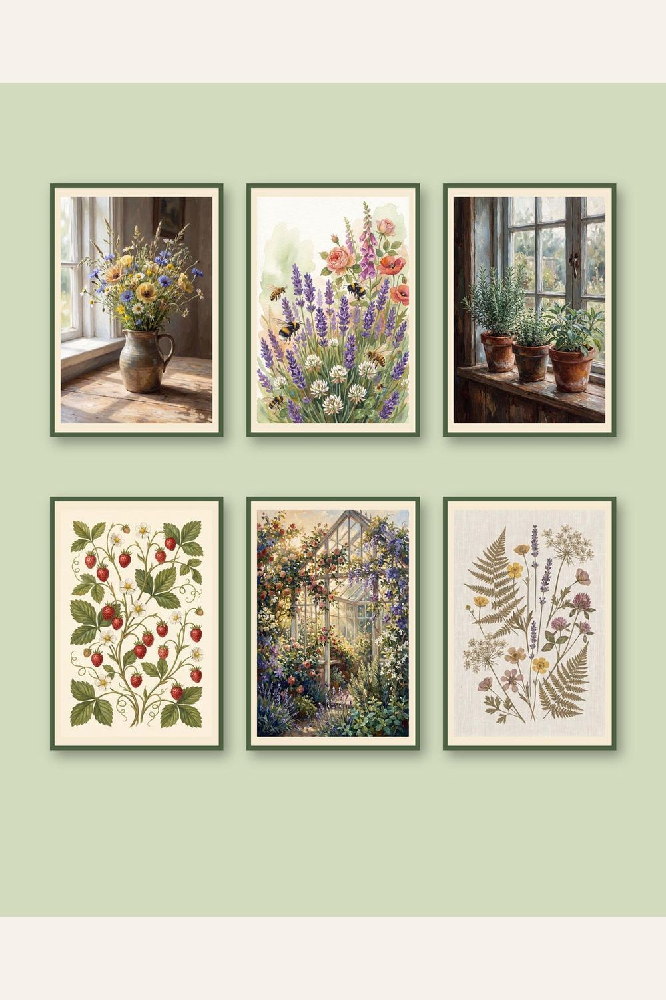

Buyer guide · botanical printables
Greenhouse botanical printable wall art for plant rooms and cozy corners


Botanical printable art is an easy way to give a sunroom, reading nook, bedroom, or creative studio a collected greenhouse feeling without waiting for framed art to ship.
Where this style works best
- Plant shelves, potting benches, and indoor greenhouse corners.
- Cottagecore bedrooms with natural textures, wicker, linen, and warm wood.
- Gallery walls that need soft green, floral, or garden-inspired artwork.
Printable buying notes
JTNPrintableCo listings are digital downloads, so buyers can download the files after purchase and print locally or online. Choose the size that fits your frame before printing, and use matte or lightly textured paper for a softer botanical look.
Shop the botanical printable wall art on Etsy
Disclosure: this page links to an Etsy digital-download listing from JTNPrintableCo. No physical frame is included.